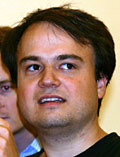
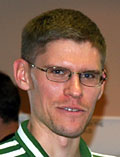

News Archives : 2005 : MCB Students Awarded Merck-Wiley Fellowships and Peralta Prize
November 21, 2005
Three MCB graduate students were recognized for their academic achievement at MCB’s retreat at Loon Mountain in New Hampshire last month. This year’s Merck-Wiley Fellowship recipients were Xi Chen and Benjamin de Bivort, and Erik Procko was awarded the Peralta Prize.
Merck-Wiley Fellowships
Funded by Merck in memory of Dr. Don Wiley, Merck-Wiley Fellowships are awarded annually in recognition of academic excellence to two training program graduate students entering their fourth year of study. The fellowships provide stipend support for two years (G4 and G5). In addition, each recipient receives a one-time personal award of $1,500.

Benjamin de Bivort

Erik Procko
Xi Chen
Xi Chen is a fourth-year MCCB graduate student in the Strominger Lab. He graduated at the top of his class from Beijing (Peking) University with a B.S. in Life Science. He is considered by his dissertation advisory committee to be a daring and talented investigator who thinks on his feet and produces advanced work, with an impressive mastery of the literature.
Dissertation Research Project Title: "The cytoskeletal remodeling during human natural killer (NK) cell cytotoxicity"
Description: The aim of my thesis is to extensively study the mechanisms that regulate the actin polymerization and microtubule organization center polarization in the context of NK cell cytotoxicity. An inducible RNAi system was built to knock down various of key regulatory molecules that orchestrate the cytoskeletal dynamics in NK cells, so that their specific roles during cytotoxicity were investigated in detail.
Benjamin de Bivort
Benjamin de Bivort is a fourth-year GGTP graduate student in the Kunes Lab. He graduated from Duke University with a B.S. Hon. in Biology and Mathematics. He is a former Peralta Prize winner and the celebrated artist of MCB retreat T-shirts. He is considered by his dissertation advisory committee to be a creative and deep thinker, ready to go after unusual problems in interesting ways. He is an exemplary researcher, teacher, and peer: hardworking and generous with his time.
Dissertation Research Project Title: "Genetics and neuroanatomy of Drosophila phototaxis"
Description: I am working to determine the genes and brain circuitry involved in a novel learning paradigm in which paired heat and light exposure suppresses flies' natural instinct to go toward light. In the end I hope to integrate two techniques: (1) a genetic approach to identify the specific regions responsible for the plasticity and motor components of this behavior, and (2) neural activity–based imaging to watch how light stimulation activates these brain regions before and after conditioning.
Peralta Prize
In memory of Dr. Ernest Peralta, the Peralta Prize is awarded annually to one MCB graduate student entering the third year of study. It is awarded by the MCB Graduate Committee in consultation with the Candidacy Examination Committee for the best defense performance and dissertation proposal arising from the G2 candidacy examination requirement. The $2,500 prize comprises $1,500 for travel or training expenses and $1,000 for unrestricted personal use.
Erik Procko
Erik Procko is a third-year MCCB graduate student in the Gaudet Lab. He graduated from the University of Adelaide with a B.Sc. Hon. in Immunology and Biochemistry. He is considered by his candidacy examination committee to be an outstanding researcher, combining good hands with a critical head: he produces controlled data and provides lucid analysis. During his candidacy examination, he engaged the examiners as fellow scientists, asking and answering questions with poise. He is a gifted teacher and a first-rate department citizen. In the words of Dr. Stephen Harrison, “He is just the sort of student whom Ernie would have been proud to know had received an award that bears his name.”
Dissertation Research Project Title: "Understanding the mechanism of an antigenic peptide transporter through structure"
Description: The transporter associated with antigen processing (TAP) pumps peptides from the cytosol into the endoplasmic reticulum, where the peptides are packaged onto MHC molecules for presentation to the immune system. Presentation of aberrant or foreign peptides triggers destruction of the offending cell by the immune system. Our aim is to understand how TAP uses the energy of ATP hydrolysis to select and pump a water-soluble peptide across a membrane barrier, using a combination of biochemical assays and structure determination.